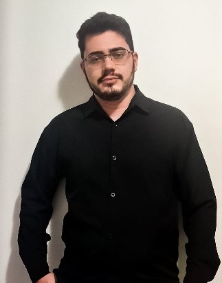
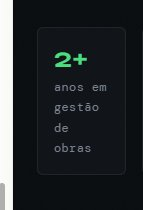
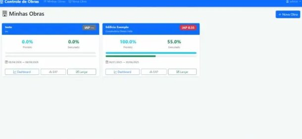
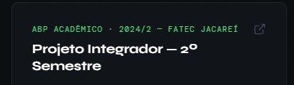
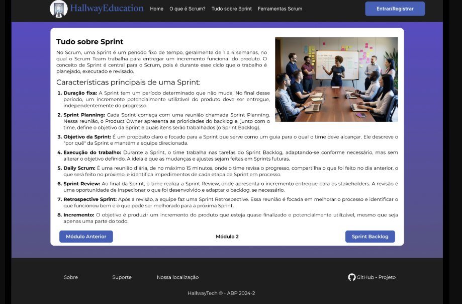
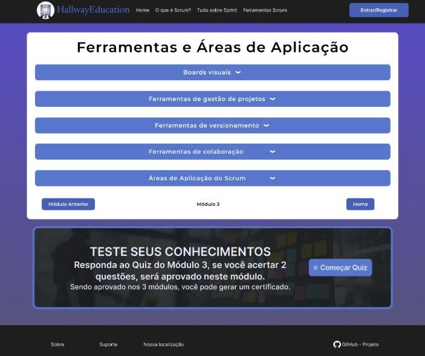

Engenheiro Civil · Analista de Dados · Planejamento de Obras · Desenvolvimento de Software
Engenheiro civil que une gestão de obras, análise de dados e tecnologia. Atuo em planejamento, controle e análise de projetos — e desenvolvo sistemas próprios para substituir planilhas por soluções digitais modernas.
// 01 — sobre mim

Sou engenheiro civil com foco em planejamento e controle de obras, com experiência tanto no canteiro quanto na gestão estratégica de projetos. Trabalho diretamente com cronogramas, análise de avanço físico, curva S, IAP e controle de produtividade.
Ao longo da minha trajetória, identifiquei que as ferramentas disponíveis no mercado — principalmente planilhas Excel — não entregam a agilidade e inteligência que a gestão moderna de obras exige. Por isso, passei a desenvolver minhas próprias soluções: sistemas web, dashboards e automações voltados para a construção civil.
Hoje estudo desenvolvimento de software com foco em Python, JavaScript, SQL e aplicações web, buscando unir engenharia e tecnologia para criar ferramentas que transformam dados de execução em decisões estratégicas.
// 02 — competências
// 03 — projetos
Projeto Pessoal · Full Stack
Sistema web completo para controle de obras, desenvolvido do zero para substituir fluxos baseados em Excel. Combina interface administrativa robusta com visão do cliente em tempo real.


ABP Acadêmico · 1º Semestre — 2024/2 · FATEC Jacareí
Plataforma de ensino sobre metodologia ágil Scrum, desenvolvida como projeto integrador do 1º semestre. O sistema oferece módulos de aprendizado interativo, quizzes de avaliação por módulo e emissão de certificado digital ao concluir o curso.
// minha contribuição



ABP Acadêmico · 2º Semestre — 2026/1 · FATEC Jacareí
Sistema de autoatendimento acadêmico desenvolvido como projeto integrador do 2º semestre. Plataforma que automatiza processos de atendimento institucional, reduzindo carga administrativa e melhorando a experiência do aluno.
// minha contribuição
screenshots em breve
// 04 — contato
Aberto a oportunidades em engenharia, análise de dados, desenvolvimento de software ou na interseção entre os três. Pode me chamar por qualquer canal abaixo.